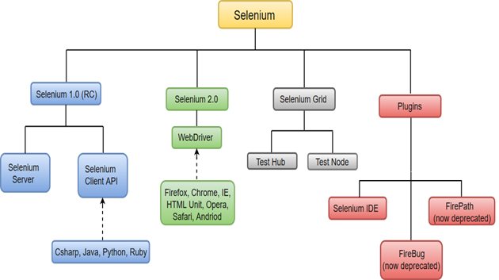
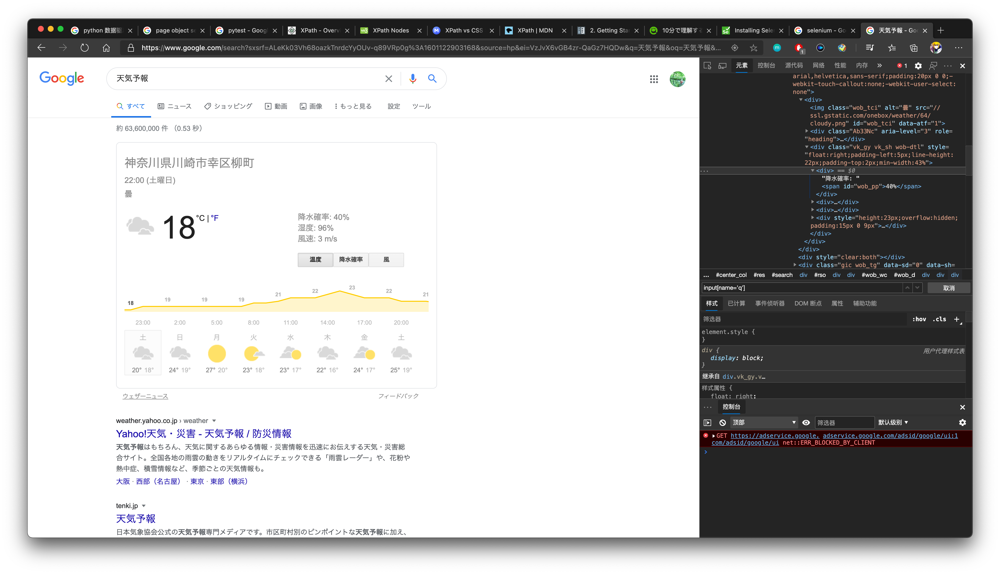
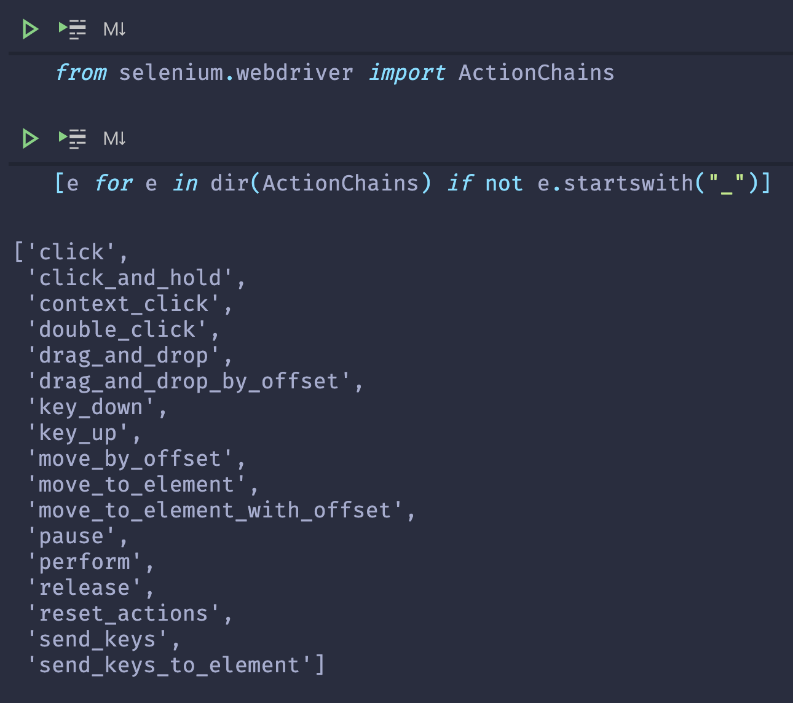
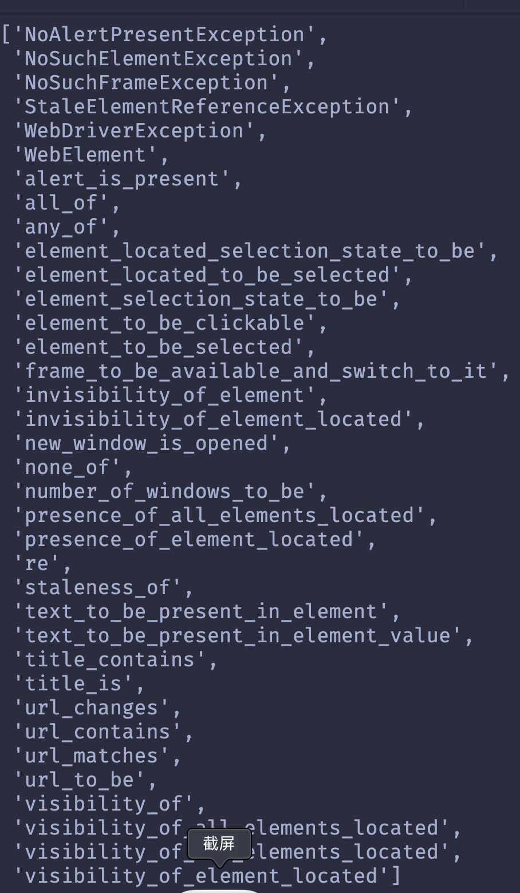

Seleniumの基本
1. Seleniumに関する簡単な紹介
Selenium は、 Webアプリケーションをテストするためのポータブルフレームワークである。
元々は Web アプリケーションの UI テストや JavaScript のテストの目的で開発されましたが、テスト以外にもタスクの自動化や Web サイトのクローリングなど様々な用途で利用されています。

HPから一目瞭然、Selenium はいくつかのコンポーネントで構成され、それぞれがWeb アプリケーションのテスト自動化の開発を支援する特定の役割を果たす。
- WebDriver: Selenium RC の後継である。コマンドを受け入れ、それらをブラウザ(Firefox、Google Chrome、Internet Explorer、Safari、Microsoft Edge 等)に送信する。Selenium-Webdriver(Selenium 2.0)からPython、Ruby、Java、およびC＃で完全に実装およびサポートされている。
- IDE: テスト用の統合開発環境である。これは、FirefoxアドオンおよびChrome拡張機能として実装される。機能テストの記録、編集、デバッグが可能である。
- Grid: リモートマシンで実行されているWeb ブラウザインスタンスをテストで使用できるようにするサーバである。

Excelのマクロ記録とVBAの違いみたいに、簡単なケースならIDEで記録して再現すればいいんだが、本番はやはりWebDriver〜
IDEの使い方に興味があるなら、ここを参考してください。＝＞click me
本記事はWebDriverをメインとする。
2. インストール
ステップ１： selenium librariesをインストール
※他の言語もできる。
Python以外に、Java, C#, Ruby, JavaScriptなども公式的に支持されている。
Pythonが一番簡単なので、ここでPythonを使う。
ステップ２： Driversをダウンロード
| Browsers | Address |
|---|---|
| Chrome | https://sites.google.com/a/chromium.org/chromedriver/downloads |
| Firefox | https://github.com/mozilla/geckodriver/releases |
| Edge | https://developer.microsoft.com/en-us/microsoft-edge/tools/webdriver/ |
| Safari | Safari 10+ いらない |
Chromeは一番使われているので、Chromeを例としてダウンロードする。

ここは、自分が使っているChromeのバージョンを確認する必要がある。

自分の場合、Chrome85を使っているため、該当のリンクをクリックする。

基本OSの種類によってクリックする。
win32のzipファイルを解凍すると、chromedriver.exeのファイルが出て来る。
※便利のため、ダウンロードされたchromedriver.exeをPythonのScriptfolderに置くのがお勧め。

3. 動かしてみる
from selenium import webdriver
from selenium.webdriver.common.keys import Keys
driver = webdriver.Chrome()
driver.get("https://www.google.com")
search_element = driver.find_element_by_name("q")
search_element.send_keys("天気予報")
search_element.send_keys(Keys.ENTER)
rainfall_probability_element = driver.find_element_by_id("wob_pp")
print(f"現在の降水確率は{rainfall_probability_element.get_property('innerHTML')}")
driver.quit()
chromedriver.exeをScriptフォルダーに置いていない場合は、下記のようにexecutable_pathを設置する必要がある。
一行ずつ説明する。
from selenium import webdriver:
from selenium.webdriver.common.keys import Keys:Enter,Escなどの特殊なキーを入力するためのモジュールdriver = webdriver.Chrome(): ブラーウザの種類によってインスタンス化する。 様々なブラウザを支持している。
様々なブラウザを支持している。

chrome_optionsなどパラメータの設定は可能である。driver.get("https://www.google.com"): 指定するURLにアクセスする。https://の部分が必要不可欠。search_element = driver.find_element_by_name("q"):
F12キーを押して、searchbarの要素をチェックしたら、name="q"を確認できる。そこで、find_element_by_nameでelementを取得する。search_element.send_keys("天気予報"): searchbarに文字列を入力する。search_element.send_keys(Keys.ENTER):Enterを入力する。rainfall_probability_element = driver.find_element_by_id("wob_pp"): print(f"現在の降水確率は{rainfall_probability_element.get_property('innerHTML')}"):spanelementのinnerHTMLプロパティーで中身を取得する。driver.quit(): ブラウザを閉じる。
4. elementの取得
一つの場合
- find_element_by_class_name
- find_element_by_id
- find_element_by_name
- find_element_by_tag_name
- find_element_by_link_text
- find_element_by_partial_link_text
- find_element_by_xpath
- find_element_by_css_selector
複数の場合
- find_elements_by_class_name
- find_elements_by_tag_name
- find_elements_by_name
- find_elements_by_link_text
- find_elements_by_partial_link_text
- find_elements_by_xpath
- find_elements_by_css_selector
※違う点：
elementとelements- 複数の場合、idのメソッドがない（idは唯一だから）
- 複数の場合の戻り値はlist、見つからない場合は空のlist
[] - 一つの場合
WebElement、見つからない場合NoSuchElementExceptionを投げる

もう気付いたと思うが、これらのメソッドはJavaScriptでDOMを操作する方法と似ている。
| JavaScript | Selenium(Python) |
|---|---|
document.getElementById |
find_element_by_id |
document.getElementsByName |
find_elements_by_name |
document.getElementsByClassName |
find_elements_by_class_name |
document.getElementsByTagName |
find_elements_by_tag_name |
document.querySelector(All) |
find_element(s)_by_css_selector |
document.evaluate |
find_elements_by_xpath |
find_element(s)_by_link_textとfind_element(s)_by_partial_link_textは該当のものがないらしい。
この二つは<a></a>に対するメソッドである。by_link_textは完全マッチ、by_partial_link_textは部分マッチ。
css selectorとXPath強いツールなので、基本的にこの二つの方法で取得する。
5. CSS Selector
基本セレクター
| セレクター | タイプ |
|---|---|
| * | 全称セレクター |
| E | 要素セレクター |
| #ID | IDセレクター |
| .class | クラスセレクター |
| selector1, selectorN | 複数セレクター |
結合子セレクター
| セレクター | タイプ |
|---|---|
| E F | 子孫結合子 |
| E>F | 子結合子 |
| E+F | 隣接兄弟結合子 |
| E~F | 一般兄弟結合子 |
擬似クラスセレクター
動的
| セレクター | 機能 |
|---|---|
| E:link | まだ訪問されていない |
| E:visited | 訪問された |
| E:hover | マウスポインタ―が要素の上を通過するとき |
| E:active | アクティブ化 |
| E:focus | フォーカスを持つ |
“LVHA順” LoVe/HAte Link-visited-hover-active
ターゲット
| セレクター | 機能 |
|---|---|
| E:target | URLのフラグメントに一致する id を持つ固有の要素 (対象要素) を表す |
言語
:lang E(language)は要素を定義された言語に基づいて選択します
UI要素の状態
| セレクター | タイプ |
|---|---|
| E:checked | チェックされている |
| E:enabled | 有効 |
| E:disabled | 無効 |
仕組み
- E:first-child
- E:last-child
- E:root
- E F:nth-child(n)
- E F:nth-last-child(n)
- E:nth-of-type(n)
- E:nth-last-of-type(n)
- E:first-of-type
- E:last-of-type
- E:only-child
- E:empty
nは整数,キーワード(even,odd),計算式(2n+1)等使える
nは１から、０の場合何も選択しない
:emptyは要素のノードまたは文字列 (ホワイトスペースを含む)を持たない要素を表す
否定
| セレクター | 機能 |
|---|---|
| E:not(F) | F以外のE要素 |
疑似要素セレクター
CSS3は疑似要素セレクターと擬似クラスセレクターを区別するためにそれぞれ
::と:を使うのをすすめ。
- ::first-letter
- ::first-line
- ::before
- ::after
- ::selection
属性セレクター
| セレクター | 機能 |
|---|---|
| E[attr] | attrという名前の属性を持つ要素 |
| E[attr=val] | attr という名前の属性の値が正確に(case sensitive) value である要素 |
| E[attr|=val] | attr という名前の属性の値が正確に value と一致するか、 value で始まり直後にハイフンが続く要素 |
| E[attr~=val] | 空白区切りの属性のリストの中にattrが存在する要素 |
| E[attr*=val] | attr という名前の属性の値が、文字列中に value を1つ以上含む要素 |
| E[attr^=val] | attr という名前の属性の値が value で始まる要素 |
| E[attr$=val] | attr という名前の属性の値が value で終わる要素 |
Eが省略される时は任意タイプの要素を表す
6. XPath
紹介

XPathはXML Path Languageの略称
ご存知の通り、CSSはHTMLをどうのように表示するかを記録する。一方、XMLの場合は、divなど事前に定義されたタッグはない。そこで、XSL(Extensible Stylesheet Language)が登場された。XPathはXSLの一部で、要素のナビの役割を担当している。
Syntax
<?xml version="1.0" encoding="UTF-8"?>
<bookstore>
<book>
<title lang="en">Harry Potter</title>
<price>29.99</price>
</book>
<book>
<title lang="en">Learning XML</title>
<price>39.95</price>
</book>
</bookstore>
Nodesを選択
| expression | description |
|---|---|
| node-name | Select all nodes with the given name "nodename" |
| / | Selection starts from the root node |
| // | Selection starts from the current node that match the selection |
| . | Selects the current node |
| .. | Selects the parent of the current node |
| @ | Selects attributes |
上のようなXMLファイルを例とする。
| Path Expression | 結果 |
|---|---|
| bookstore | 全ての"bookstore"のNodesを選択する |
| /bookstore | root要素bookstoreを選択する |
| bookstore/book | bookstoreの全てのbook子要素を選択する |
| //book | documentの中のbook要素を全部選択する |
| bookstore//book | bookstoreの子孫book要素を全部選択する |
| //@lang | langの属性を持っている要素を全部選択する |
特定な要素
| Path Expression | 結果 |
|---|---|
| /bookstore/book[1] | bookstoreの子要素の中の最初のbook要素を選択※１base |
| /bookstore/book[last()] | bookstoreの子要素の中の最後のbook要素を選択 |
| bookstore/book[position()<3] | bookstoreの子要素の中の最初の二つのbook要素を選択 |
| //title[@lang] | langの属性を持っている全てのtitle要素を選択する |
| bookstore/book[price>35] | bookstoreの子book要素の中に、priceの属性が３５以上の要素の選択する |
Wildcard
| Wildcard | Description |
|---|---|
| * | 任意なelement node |
| @* | 任意なattribute node |
| node() | 任意なnode |
複数を選択
|を利用する
Axes
| AxisName | Result |
|---|---|
| ancestor | コンテクストノードの親ノードからルートノードまでの全ての祖先 |
| ancestor-or-self | コンテクストノードと、その全てのルートノードを含む祖先 |
| attribute | コンテクストノードの属性 |
| child | コンテクストノードの子 |
| descendant | コンテクストノードの全ての子と、その全ての子と、そのまた全ての･･･ |
| descendant-or-self | コンテクストノードと、その全ての子孫 |
| following | コンテクストノードの後に現れる、descendant、attribute、namespace ノードを除く全てのノード |
| following-sibling | コンテクストノードと同じ親を持ち、ソース文書内でコンテクストノードの後に現れる全てのノード |
| namespace | コンテクストノードのスコープ内にある全てのノード |
| parent | コンテクストノードの親である単一のノード |
| preceding | 文書内でコンテクストノードの前に現れる、 ancestor、 attribute 、 namespace ノードを除く全てのノード |
| preceding-sibling | コンテクストノードと同じ親を持ち、ソース文書内でコンテクストノードの前に現れる全てのノード |
| self | コンテクストノード自身 |
operator
| Operator | Description |
|---|---|
| | | 二つのnodesetのunion |
| + | 足し算 |
| - | 引き算 |
| * | 掛け算 |
| div | 割り算 |
| = | equal |
| != | not equal |
| < | less than |
| <= | 以下 |
| > | great than |
| >= | 以上 |
| or | もしくは |
| and | 同時に |
| mod | modulus |
Functions
CSS3 VS XPath
| Goal | CSS3 | XPath |
|---|---|---|
| All Elements | * | //* |
| All P Elements | p | //p |
| All Child Elements | p>* | //p/* |
| Element By ID | #foo | //*[@id=’foo’] |
| Element By Class | .foo | //*[contains(@class,’foo’)] |
| Element With Attribute | *[title] | //*[@title] |
| First Child of All P | p>*:first-child | //p/*[0] |
| All P with an A child | Not possible | //p[a] |
| Next Element | p + * | //p/following-sibling:: *[0] |
| Previous Element | Not possible | //p/preceding-sibling:: *[0] |
7. ページやウィンドウ間などの移動
ページ間の移動
ウィンドウへ移動
driver.titleは現在開いたウィンドウの名前を取得できる。
windows = driver.window_handles
for i in windows:
driver.switch_to.window(i)
if(driver.title == "<スイッチしたいウィンドウ>"):
break
フレームへ移動
driver.switch_to_frame("frameName")
driver.switch_to_frame("frameName.0.child")
driver.switch_to_default_content() # 元へ戻る
ポップアップダイアログに応える
8. ユーザー入力（クリックや選択など）
クリックする
文字列を入力する
element.send_keys("文字列")
element.send_keys(Keys.RETURN) # 特殊キーなどを入力
element.send_keys("文字列", Keys.RETURN) # 続けて書く
element.clear() # クリアする（send_keysはappendのため、入力する前にクリアしてから入力するのが安心）
select 要素内の「option」を選択する

select = Select(driver.find_element...) # select 要素を見つける
# 選択
select.select_by_index(index)
select.select_by_visible_text("text")
select.select_by_value(value)
# 選択解除
select.deselect_by_index(index)
select.deselect_by_visible_text("text")
select.deselect_by_value(value)
select.deselect_all() # すべての選択解除
# その他
select.all_selected_options # 選択されているオプション要素のリスト
select.options # 選択できるオプション要素のリスト
option_texts = [opt.text for opt in select.options]
9. ActionChains
マウスとキーボードの操作を模擬する際、ActionChainsを利用する
ActionChainsは動作をリストに追加して、perfom()を実行してからリスト中の動作を順番に実行する。
Chain
from selenium.webdriver import ActionChains
menu = driver.find_element_by_css_selector(".nav")
hidden_submenu = driver.find_element_by_css_selector(".nav #submenu1")
ActionChains(driver).move_to_element(menu).click(hidden_submenu).perform()
step by step
menu = driver.find_element_by_css_selector(".nav")
hidden_submenu = driver.find_element_by_css_selector(".nav #submenu1")
actions = ActionChains(driver)
actions.move_to_element(menu)
actions.click(hidden_submenu)
actions.perform()
methods

- click(on_element=None)
- click_and_hold(on_element=None)
- context_click(on_element=None) ->右クリック
- double_click(on_element=None)
- drag_and_drop(source, target)
- drag_and_drop_by_offset(source, xoffset,yoffset)
- key_down(value,element=None)
- key_up(value,element=None)
- move_by_offset(xoffset,yoffset)
- move_to_element(to_element)
- move_to_element_with_offset(to_element,xoffset,yoffset)
- pause(seconds)
- perform()
- release(on_element=None) ->マウスのキーを解放
- reset_actions()
- send_keys(*keys_to_send)
- send_keys_to_element(element,*keys_to_send)
10. Wait
基本、seleniumは画面を読み込まれるまで（onloadイベントまで）待ってくる。
ですが、Ajax、アニメーション、サーバの反応などさまざまな原因で待つが必要
とりあえず待つ
※基本はデバッグ以外は利用しないが、animationある画面のスクリンショットを撮る際、活躍できる。
document.addEventListener('animationend', () => {
console.log('Animation ended');
});
document.onanimationend = () => {
console.log('Animation ended');
};
seleniumはJavaScriptほどDOMを操作することはできない
GitHub上seleniumにアニメーションの実行をまつの議論
ポーリング時間指定（非明示的待機）
要素がすぐに見つからない場合の待ち時間（ポーリング時間）を指定
デフォルトは0
設定は一回だけで十分
条件を指定（明示的待機）
from selenium import webdriver
from selenium.webdriver.common.by import By
from selenium.webdriver.support.ui import WebDriverWait
from selenium.webdriver.support import expected_conditions as EC
driver = webdriver.Chrome()
driver.get("http://somedomain/url_that_delays_loading")
try:
element = WebDriverWait(driver, 10).until(
EC.presence_of_element_located(
(By.ID, "myDynamicElement"))
)
finally:
driver.quit()

WebDriverWait(driver,
timeout, # 待つ時間の最大値
poll_frequency=0.5, # 試すの頻度
ignored_exceptions=None) # Exceptionを無視するか

11. ScreenShot
alertなどが現れた時は、このメソッドが使えない
撮りたいなら、Pillowの使いをススメ
pip install Pillow
from PIL import ImageGrab
size = (left_x, top_y, right_x, bottom_y)
img = ImageGrab.grab(size)
img.save(filename)
img.show()
12. Exception
- NoSuchElementException
- NoSuchFrameException
- NoSuchWindowException
- ElementNotVisibleException
- StaleElementReferenceException
- InvalidElementStateException
- UnsupportedCommandException
- UnreachableBrowserException
- SessionNotFoundException
- WebDriverException
- NoAlertPresentException
13. JavaScriptの活用
import datetime as dt
from selenium import webdriver
today = dt.date.today()
new_year = dt.date(today.year+1, 1, 1)
days_left = (new_year-today).days
driver = webdriver.Chrome()
driver.execute_script("console.log(`${arguments[0]}年まであと${arguments[1]}日`)" ,today.year+1, days_left)
実行したら、Chromeの開発者ツールの"console"の部分を開いて、以下のような結果となる。

形式は以下となる
execute_scriptをよく使う場合その１はScrollBarに対する操作。
target = driver.find_element_by_xxxx()
driver.execute_script("arguments[0].scrollIntoView();", target) # 要素を視線にする
driver.execute_script("window.scrollTo(0, document.body.scrollHeight);" # 画面の一番下まで
その２は画面要素の属性の変更。Seleniumは要素の属性の取得や確認ができる。だが変更するのはできない。

簡単な例：
driver.get("https://google.com")
driver.execute_script(
"let foo = document.querySelector(\"input[name='q']\");"
"foo.style.border='5px solid red'")

14. Page Object
15. そのほか
close() VS quit()
close(): Closes the current window quit(): Closes the browser and shuts down the ChromiumDriver executable that is started when starting the ChromiumDriver

「Chromeは自動テストソフトウェアによって制御されています」を非表示
chrome_options = webdriver.ChromeOptions()
chrome_options.add_experimental_option("excludeSwitches", ['enable-automation'])
driver = webdriver.Chrome(options=chrome_options)
cookies
driver.get_cookies()
driver.get_cookie(keyname)
driver.delete_all_cookies()
driver.delete_cookie(keyname)

Headless Chrome
Chromeの画面を開かないままChromeが支持する機能を利用するのは
Headless Chrome
つまり、CLIとGUIの違い
昔はPhantomjsを使うが、Phantomjsの開発が停止されたので代わりにHeadless Chromeを利用する
from selenium import webdriver
from selenium.webdriver.chrome.options import Options
chrome_options = Options()
chrome_options.add_argument('--headless')
chrome_options.add_argument('--disable-gpu')
driver = webdriver.Chrome(options=chrome_options)
url = 'https://google.com/'
driver.get(url)
driver.save_screenshot('google.png')
driver.quit()
| よく使う項目 | 効果 |
|---|---|
| –user-agent="" | request headのUser-Agentを設定する |
| –window-size=width,height | ウィンドウの大きさを設定する |
| –headless | CLIで実行 |
| –start-maximized | ウィンドウを最大化 |
| –disable-javascript | javascriptを禁じる |